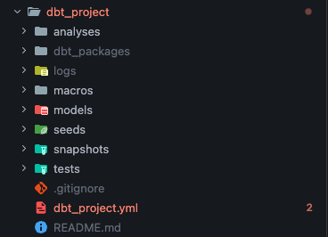

dbt init — scaffolding your projectdbt is installed. Now you need a project — a specific directory layout that dbt knows how to read. dbt init <name> generates that layout for you. You only run it once per project, ever.
dbt init createsdbt_project/
├── dbt_project.yml ← project config: name, version, model paths, defaults
├── analyses/ ← ad-hoc SQL that doesn't materialize
├── macros/ ← reusable Jinja-templated SQL snippets
├── models/ ← your transformations live here (this is where you spend most of your time)
├── seeds/ ← static CSVs loaded as tables (raw lookup data, jaffle_shop CSVs)
├── snapshots/ ← SCD2 history tables
├── tests/ ← custom singular SQL tests
└── README.md

Each folder maps to a section of dbt_project.yml. You can rename them (model-paths: ["transformations"] etc.) but the defaults are what 99% of projects use — sticking to convention makes your repo legible to anyone who’s seen another dbt project.
profiles.yml — the connection config. Says which warehouse to use, where it lives, what credentials. By default dbt looks for it in ~/.dbt/profiles.yml (your home dir), but for this course we keep it inside dbt_project/ so the project is self-contained. You write it in the next exercise.target/ — the build output (compiled SQL, manifests, run results). dbt creates this on the first dbt run; you never write to it by hand.When you run dbt init dbt_project, dbt asks you a couple of questions before scaffolding. Use these answers:
| Prompt | Answer |
|---|---|
Which database would you like to use? |
1 (or whichever number is next to duckdb) |
| Profile-related prompts (path, threads, schema) | Press Enter to accept defaults. We overwrite profiles.yml properly in the next exercise. |
The profile dbt_project already exists in ~/.dbt/profiles.yml. Continue and overwrite it? |
n — we keep profiles.yml inside the project, not in your home directory. |
If dbt init doesn’t prompt for a database (some versions skip it when only one adapter is installed), that’s fine — it just scaffolds the project.
dbt init drops a sample models/example/ folder with my_first_dbt_model.sql, my_second_dbt_model.sql, and a schema.yml. One of them emits a NULL row that fails a not_null test — which will break the Stage 2 dbt build exercise unless you remove it. The walkthrough below has the rm -rf step.
You’ll write your own models under models/staging/, models/intermediate/, and models/marts/ over the next few exercises.
Run dbt init dbt_project from the repo root (the directory that contains this README.md and curriculum.yaml). dbt creates a folder named after the argument you pass, so the result is <repo-root>/dbt_project/. The verifier in the next exercise looks for dbt_project/dbt_project.yml at exactly that path.
Everything under dbt_project/ is gitignored — the repo ships only the raw CSVs in data/. If you mess up, run dbt-learn reset; the CLI deletes dbt_project/ and you’re back to a blank slate.
dbt init from inside dbt_project/. — You’ll end up with dbt_project/dbt_project/. Always run it from the repo root.~/.dbt/profiles.yml won’t match. Easy to fix — dbt-learn reset and try again.~/.dbt/profiles.yml. — dbt init may write a profile there in your home directory. Ignore it — this course uses dbt_project/profiles.yml via DBT_PROFILES_DIR, set automatically by the verifier.rm -rf dbt_project/models/example step. — The Stage 2 dbt build exercise will fail with ERROR=1 on not_null_my_first_dbt_model_id. If that happens, run the rm and re-press v.Press n to start the exercise.
From the repo root (where this file lives), run:
dbt init dbt_project
dbt will prompt you with a couple of questions. Use these answers:
| Prompt | Answer |
|---|---|
Which database would you like to use? |
1 (or whichever number is next to duckdb) |
| Profile-related prompts (path, threads, etc.) | press Enter to accept defaults — we’ll overwrite profiles.yml properly in the next exercise anyway |
If dbt init doesn’t prompt for a database (some versions skip it when only one adapter is installed), that’s fine — it’ll just scaffold the project.
If dbt asks whether to overwrite an existing ~/.dbt/profiles.yml, answer n (we won’t use that one — this course keeps profiles.yml inside the project).
After it finishes you should have a new directory tree:
dbt_project/
├── dbt_project.yml
├── analyses/
├── macros/
├── models/
│ └── example/ ← sample models dbt drops in — delete in the next step
├── seeds/
├── snapshots/
└── tests/
The CLI may also create or update ~/.dbt/profiles.yml in your home directory. Ignore it — we won’t use that one. The next exercise has you write dbt_project/profiles.yml instead.
dbt init ships sample models at dbt_project/models/example/ (my_first_dbt_model.sql, my_second_dbt_model.sql, plus schema.yml). One of them returns a NULL row that fails a not_null test, which will break the Stage 2 dbt build exercise. Delete the folder now:
rm -rf dbt_project/models/example
You’ll write your own models under models/staging/ (Stage 1) and models/marts/ / models/intermediate/ (Stage 2).
Press v and the verifier will check that dbt_project/dbt_project.yml exists and is non-empty. It does not care about the contents yet; it just confirms dbt init ran.
Run dbt-learn reset to delete dbt_project/ entirely and start over.
Press n to advance to the next exercise where you’ll configure the DuckDB connection.